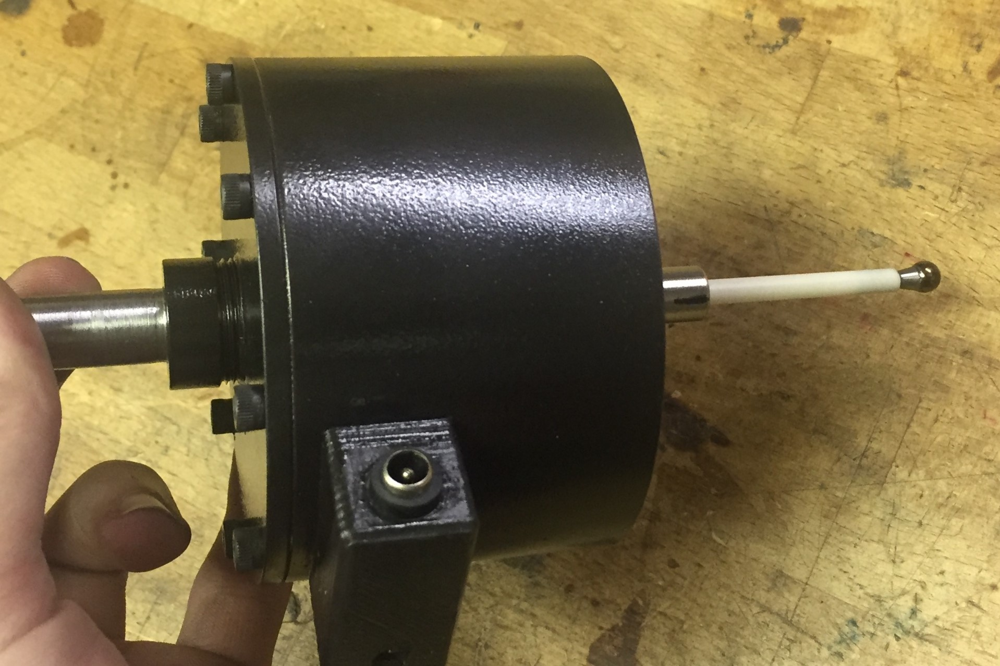
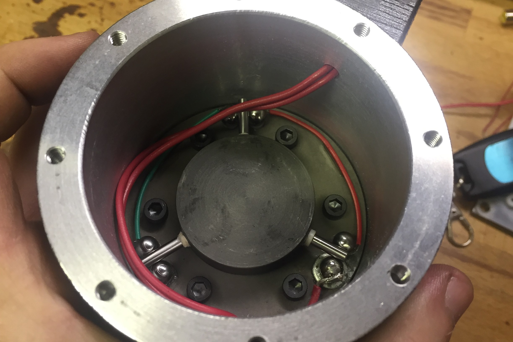
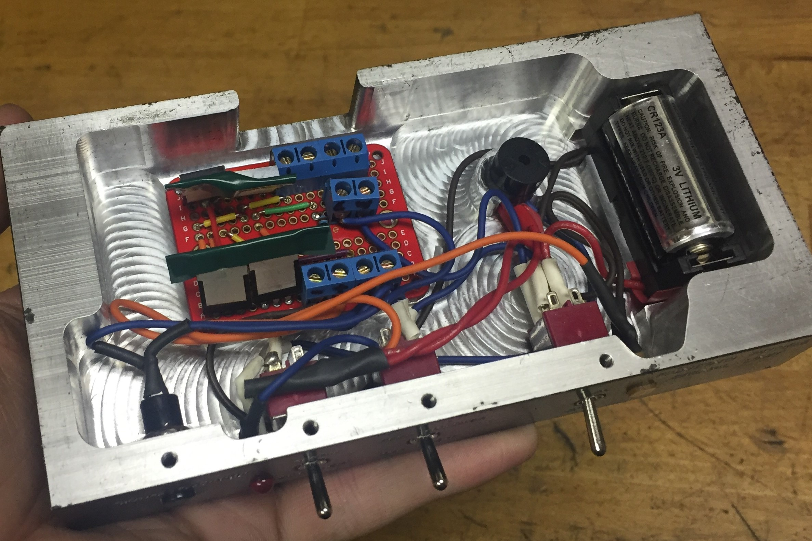
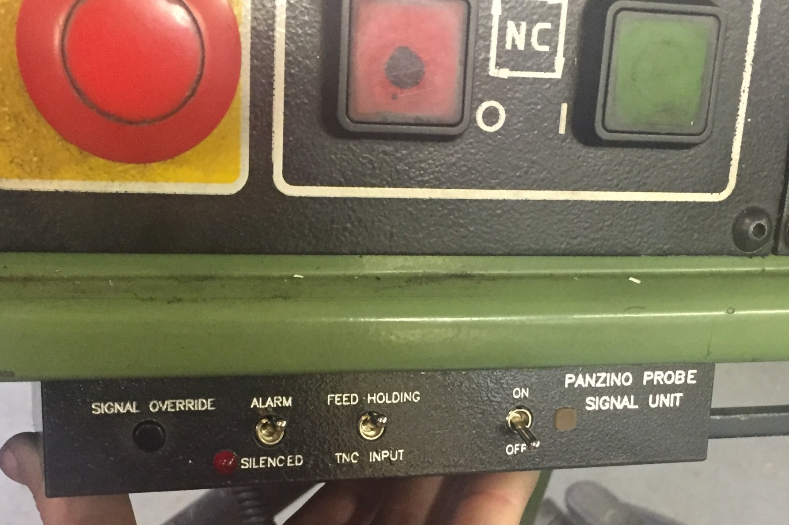
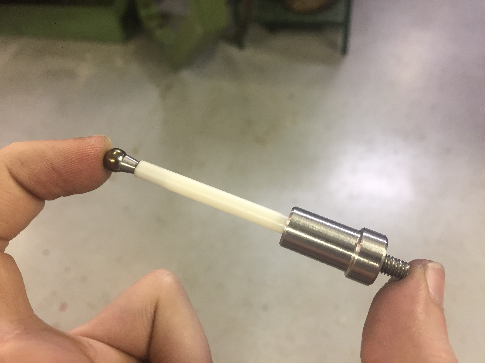

Touch Probe
Fall 2019-Summer 2020
Meauring surfaces electronically

I decided to make a touch probe for a future plan to make a CMM. My initial design was to use a flexible plastic component fitted with strain gauges to measure tiny deflections of the probe tip to detect a contact. However, as it turns out, strain gauges are not the easiest things to use. Soldering leads to them is hard, especially on a plastic substrate. Even then, it requires tricky amplification and resistor bridges to detect the tiny changes in the resistance of the gauge. I'm sure I could get it to work eventually if I kept trying, but I decided to get some practice with strain gauges seperately, and then try this again once I know how to get them to work.
After the school year, I decided to give this project another chance, and redesigned it from the ground up. Rather than try to use strain gauges, I instead used a kinematic coupling made of hardened steel dowel pins and bearing balls, electrically isolated via alumina ceramic bushings and posts, wired together to form a continuous circuit through all the single points of contact. This resulted in a circuit whose resistance was dependent on the force pressing the contact points together, because the higher forces would create larger elastic contact patches, increasing the area of the contact. As the probe was pushed aside, it would start to lift one side of the coupling, reducing the contact area at those points (ideally the contact would not actually be broken), which would increase the resistance of the loop. I made a simple circuit to detect this rise in resistance and trigger a signal when it got high enough.

The kinematic coupling and electrical contacts inside the probe body. The central spoked core is what the stylus mounts to, and is held down by springs in the cover
Once I had the signal from the touch probe, I had to do something with it. The Heidenhain TNC 355 controller on the Hermle does have a touch probe input and basic probing cycles, but making my probe compatible with that seemed like a bit more work than I wanted to go through until I knew it was going to work well. So I came up with a easy to implement and convenient way to use the probe with the machine in Jog mode. The machine has a feed override that is used to set machine jog speed. This override is an analog potentiometer, rather than being controlled in software, so I could modify the feed override however I wanted on-the-fly by just manipulating the voltage on the wiper of the potentiometer. So I made a circuit that connected to the potentiometer and whenever the touch probe was triggered it would drag the potentiometer wiper to ground directly, which would immediately set the feed override to 0, stopping the machine. This worked absolutely perfectly, and I was very surprised at how consistently this would stop the machine, allowing for very repeatable measurements (+/- 0.0005" for repeated measurements in the same direction, on a 6" long, 0.25" diameter steel stylus). The astute among you may realize that this method had a danger; if the potentiometer was set very high, then my circuit's attempt to drag the wiper to ground would effectively short out the reference voltage supplied to the potentiometer, which could damage the controller. To make sure this never happens, the circuit I designed would also be constantly monitoring the wiper voltage, and if it sees too much voltage on the wiper (indicating that the potentiometer is set too high), then it triggers an interlock that prevents the pull-down MOSFET from firing, ignores touch probe input, and continuously sounds a piezo buzzer so you know the system is not active (in this state it will not stop the machine when you jog the probe into something, so yes the probe may break in that case, but that's better than damaging the CNC controller).

The cuircuit assembly in the machined housing. Exposed contacts that could touch the housing were protected and insulated.

The machined housing on the controller pendant. The internal cavity was machined and then painted, then the lettering was engraved afterwards. The font was matched to the Heidenhain controller's font.
Eventually, in the Fall of 2020, I redid the control circuitry to let me use either my own probe or a commercial conductive probe that is more compact. The commercial probe acts like a normally-open contact, while my probe is normally-closed, so I had to change the circuitry. I also made it more reliable. I did this by more-or-less cheating, and just using an arduino. While I was at it, I finally ran the output to the TNC 355's actual touch probe input, so now I can use all the built-in functions on the control with the probe to do things like set work zeros, center on bores, etc. It is very nice now, and we've had many opportunities to use the probe since then.

The short 2" ceramic stylus. The probe tip is a hardened steel bearing ball, the stem is an alumina ceramic tube, and it simply threads into the central core of the probe.